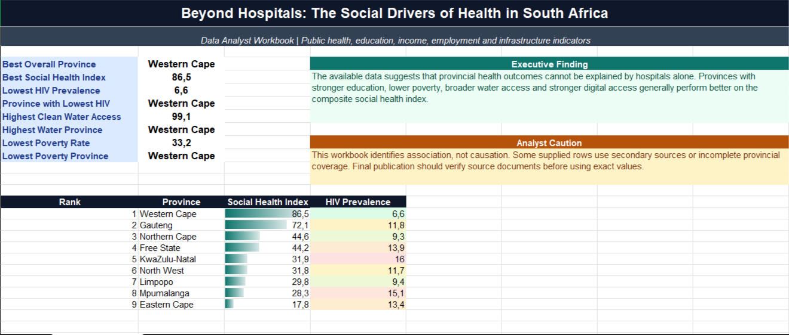
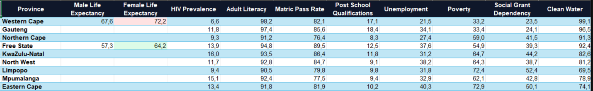
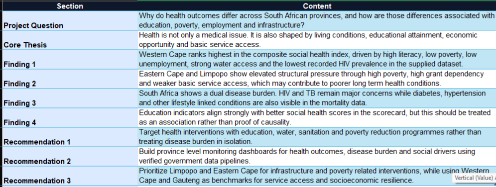

Beyond Hospitals
The Social Drivers of Health in South Africa
A public health and socioeconomic data analysis project comparing provincial health indicators with education, poverty, employment, infrastructure, housing, and service access metrics.
Project Overview
This project examines how provincial health outcomes can be reviewed alongside socioeconomic conditions instead of being assessed through hospital access alone.
The analysis consolidates health, education, poverty, employment, infrastructure, housing, and service access indicators into a province-level reporting framework.
The business outcome is an evidence based view that helps decision makers monitor health indicators and social drivers together while treating the findings as association, not causation.
Business Challenge
Health outcomes differ across provinces, but the underlying drivers are spread across multiple social and economic datasets. This makes it difficult to see whether disease burden, life expectancy, poverty, education, and service access should be reviewed together.
A single reporting framework was needed to compare provinces consistently and communicate public sector decision value.
Data Sources
The project uses province-level records covering health outcomes, disease burden, education, employment, income, infrastructure, housing, water access, and service conditions.
The data quality view documents record counts, categories, year coverage, missing values, national rows, provincial rows, and source coverage.
Data Processing and Analysis
I integrated the datasets into a province-level scorecard, reviewed quality and coverage, and built comparison measures for life expectancy, HIV prevalence, literacy, matric pass rate, unemployment, poverty, grant dependency, and clean water access.
The dashboard supports trend interpretation, provincial comparison, data storytelling, and evidence based reporting.
Tools and Technologies
Excel, public sector analytics, data integration, research analysis, dashboard design, data storytelling, business intelligence.
Reporting and Insights
- Western Cape ranks highest in the composite social health index.
- Western Cape shows the lowest recorded HIV prevalence in the supplied dataset.
- Eastern Cape and Limpopo show elevated structural pressure through poverty, grant dependency, and weaker service access.
- Education indicators align strongly with better social health scores, but the relationship should be treated as association rather than proof of causality.
Screenshot Gallery




Business Outcome
This project supports public sector planning by showing why health interventions should be paired with education, water, sanitation, poverty reduction, and infrastructure programs. It gives decision makers a way to monitor disease burden and social drivers together instead of treating health outcomes in isolation.
Key Analytical Capabilities
The project demonstrates data integration, province level comparison, public health analytics, data quality review, evidence based recommendation writing, and executive dashboard communication.
Back to Projects